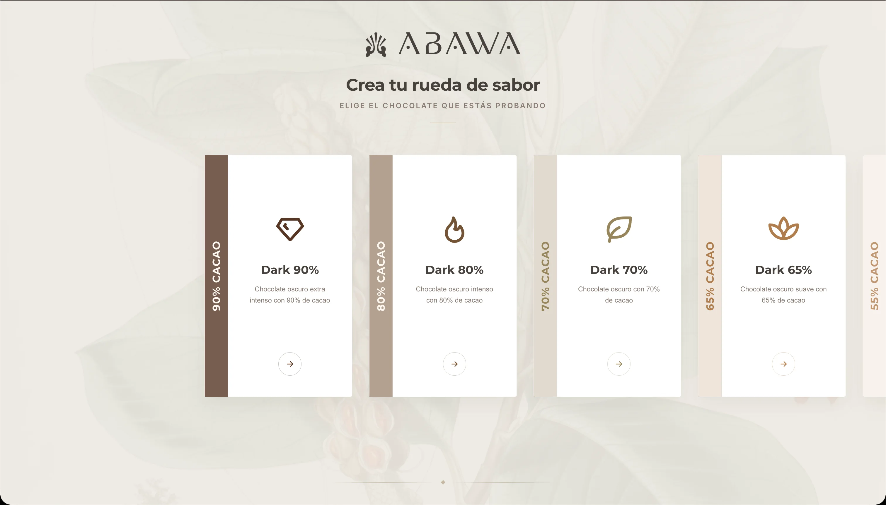
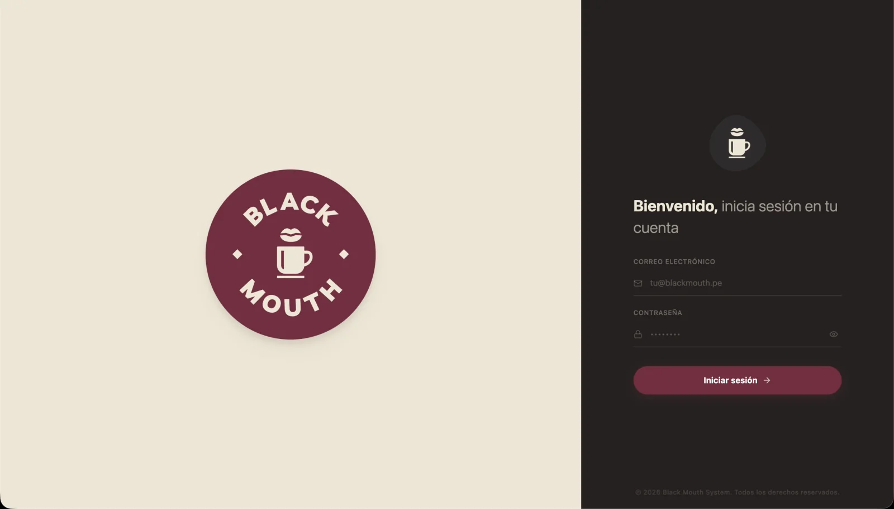

treborrr.ts
Analizo cómo operan las empresas para diseñar y construir sistemas a medida que eliminan la fricción del papel y los procesos manuales, llevando toda tu operación a una infraestructura robusta en la nube.
Robert Alvarado
Computer Science
Lo que hago
Transformo problemas operativos complejos en soluciones digitales eficientes y escalables.
Análisis Operativo
Estudio tu flujo de trabajo actual para identificar cuellos de botella y oportunidades de automatización que optimicen tiempo y recursos en tu empresa.
Digitalización
Transformo formularios, hojas de cálculo y registros físicos en plataformas digitales intuitivas, conectadas y hechas totalmente a la medida de tu equipo.
Seguridad en la Nube
Implemento arquitecturas en la nube escalables con respaldos automatizados, garantizando que tu información esté siempre disponible, consistente y segura.
Sistemas que ya operan
Sistemas reales construidos a medida. Cada proyecto, una solución pensada desde la operación.
Casa Hospedaje Burgos
Sitio bilingüe con sistema de reservas, galería de habitaciones y guía de lugares turísticos de Chachapoyas.




Trayectoria Profesional
Mi recorrido diseñando sistemas a medida y asegurando la calidad del software.
Desarrollador de Software a Medida
- Arquitectura y desarrollo de SCCE (Sistema de Control de Cacao Especial).
- Solución construida a la medida, adaptada estrictamente a la lógica de negocio y operativa de la empresa.
- Digitalización del flujo de trabajo, eliminando la fricción del papel para mejorar la trazabilidad de la operación.
Analista de Calidad de Software (Tester QA)
- Ejecución de pruebas funcionales y no funcionales en entornos de desarrollo y producción.
- Elaboración de casos de prueba, documentación de resultados y gestión de incidencias.
- Colaboración directa con equipos de desarrollo para asegurar la calidad del producto final.
- Automatización de procesos y administración de entornos de prueba operando en Linux.
Stack Tecnológico
Las herramientas que utilizo para construir producto e infraestructura.
Lenguajes & Frameworks
 Next.js
Next.js
 TypeScript
TypeScript
 Angular
Angular
 Python
Python
 C++
C++
 PHP
PHP
 Lua
Lua
 PostgreSQL
PostgreSQL
 MySQL
MySQL
 SQLite
SQLite
Infraestructura & Deploy
 AWS
AWS
 Docker
Docker
 Nginx
Nginx
 Apache
Apache
 Vercel
Vercel
 Railway
Railway
 Supabase
Supabase
 Linux
Linux
 Git
Git
 Neovim
Neovim
¿Tienes un proceso que digitalizar?
Cuéntame cómo opera tu empresa hoy y diseñemos juntos el sistema a medida que elimine el papel y lleve tu operación a la nube. La primera conversación es gratis.
Mensaje recibido — te escribo pronto.